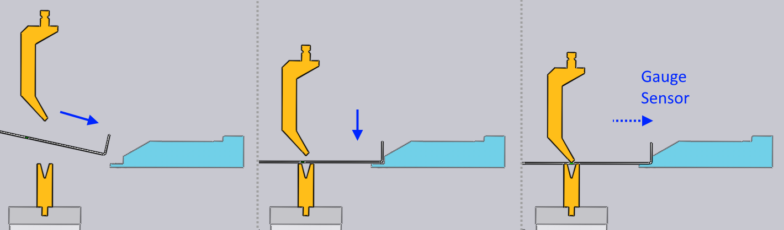
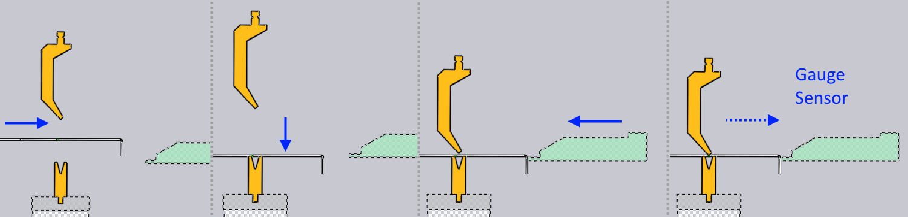
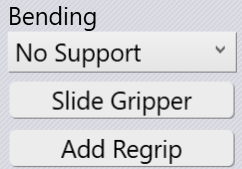
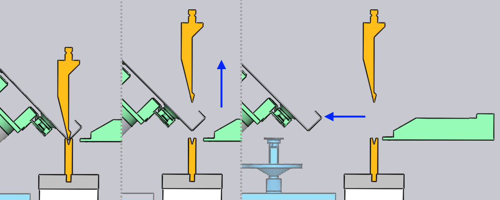
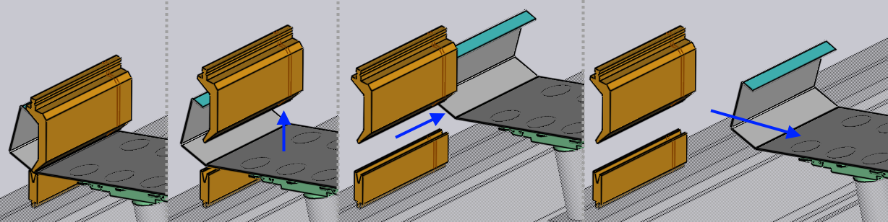
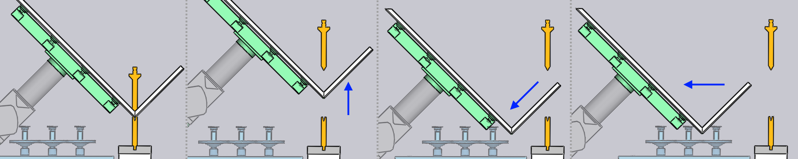
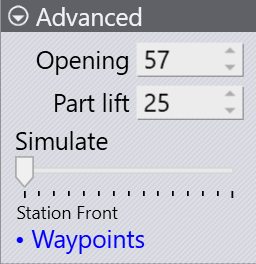

Strategy panel

The Robot Strategy panel lets you control the processing strategy for each phase of the bending operation. You can configure how the robot handles part insertion, the bending process itself, and part extraction with specific strategies and settings for each phase.
Insertion
The Insertion section of the Robotic Strategy panel controls how the part is inserted into the machine before clamping and bending.
-
The Insertion list lets you choose the insertion method:
-
Standard: Insert the part straight into the machine from the front.
-
From Left or From Right: Slide the part in from the side of the punch/die station.
-
Insert part first
The normal insert operation works like this:

-
The gauge is positioned a few mm closer to the bend line than is required for gauging the part.
-
The part is lowered into position a few mm in front of the gauge.
-
The robot pushes the part back against the gauge until the contact sensors in the gauge engage and indicate that the part is correctly positioned. Then the bending cycle begins.
Sometimes, if the part has a downward facing flange on which the gauging must happen, this is difficult - the flange would collide with the gauge as the part is being lowered into position. For these situations, Flex Cell CAM will automatically use the Insert part first strategy, which looks like this:

-
The part is inserted into the machine, raised so that the down-hanging flange clears the die.
-
The part is lowered over the die, but positioned a few mm retracted back from the final bending position.
-
The gauge moves forward, again a few mm closer to the bend-line than is required for gauging the part.
-
The robot now pushes back the part a few mm until the gauge contact sensors engage, and the bending then happens.
Flex Cell CAM automatically selects this strategy when needed, but you can override the automatic selection by checking this option.
BG: Z before X
The BG: Z before X strategy creates a safer movement path for the backgauge in situations where the gauging position for this bend is closer to the bend line than the gauging position of the previous bend. Normally, the gauges will freely move from the previous gauging position to the new one once the bend step change happens.
When this checkbox is selected, the gauges first move in the Z direction until they are directly aligned behind their final positions. After that, they advance forward in the X direction to get into position, avoiding a potential collision that may be caused by a diagonal movement.
This strategy is selected automatically by Flex Cell CAM where needed, but can be overridden here.
Bending

No Support: This is the default strategy. The gripper releases the part during the bending operation, and waits for the bend to be completed before moving up and regripping the part.
Slide Gripper: This option adjusts the gripper position during the bending operation to ensure proper part alignment and support throughout the bend cycle.
Add Regrip: You can add a regrip operation by clicking the Add Regrip button. This allows you to change the gripper’s position and orientation, or even switch to a different holding plane for complex multi-bend sequences. For detailed information on regrip, see the Regrip section.
Extraction

After the bending is completed, the part needs to be extracted out from between the punch and the die to prepare it for the next bend. The Extraction list lets you pick from one of the different extraction strategies. Provided below a brief explanation of each of the extraction strategies.
Flex Cell CAM will automatically choose one of these strategies to avoid collisions depending on the part geometry. The settings in this section allow you to override the extraction algorithm, or to tweak the parameters for the chosen algorithm.
-
Standard: The standard extraction method is used by default, when the part needs to be extracted and flipped or rotated in preparation for the next bend.

-
No Extraction: If the next bend is close to the bend that was just completed, and is approximately parallel to it, and has the same bending direction, there is no need to actually extract the part and insert it again. The part just swivels about the Z axis into position for the next bend, as shown in the sequence below.

-
Left / Right: A direct backwards extraction is sometimes difficult because the beam may not be able to be opened sufficiently, or when the part has deep flanges interlocking with the gooseneck tool, as shown in the image below.
The part can then be extracted to the left or right by using this strategy. The Side shift parameter controls the sideways shift of the part (in Z direction) before extraction.

-
Slide back: This is another strategy that can be useful with tall flanges. The part is slid backwards and downwards by the Slide parameter before being extracted out.

Advanced

The following parameters appear in the Advanced section of the panel:
-
The Opening setting controls the beam opening [1] after the bending is done.
-
At the start of the extraction, the part is lifted up from the resting position on the die by the Part lift setting before the extraction continues.
-
The Simulate slider at the bottom of the panel can be used to easily move back and forth through the bending cycle simulation so you can review the effects of your changes. If you make any of changes in the Strategy panel, the simulation is immediately updated, and all collision checks are performed and updated in real time. The slider also displays the current phase of the bending operation. In this example, the simulation is at the Lower to Die phase.
-
The Waypoints link takes you to the Waypoints panel where you can have precise control over the robot trajectory during the bending process.